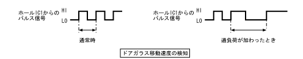

| Power Window Computer |
| ● |
The power window ECU (computer) detects the amount of door glass movement by counting the pulses output by the Hall IC, at 2 cycles per 1 rotation of the motor shaft. Together with this, it determines the motor rotation direction (door glass movement direction) from the rotation direction signal output by the Hall IC. Various functions are controlled based on the position and movement direction information obtained from this Hall IC.
|
 |
| ● |
At the same time, the power window ECU (computer) detects changes in the door glass movement speed by detecting changes in motor rotation speed from the intervals of the pulses output by Hall IC1. This allows it to recognize the load applied to the door glass and control the jam protection function and overload stop function.
|
 |